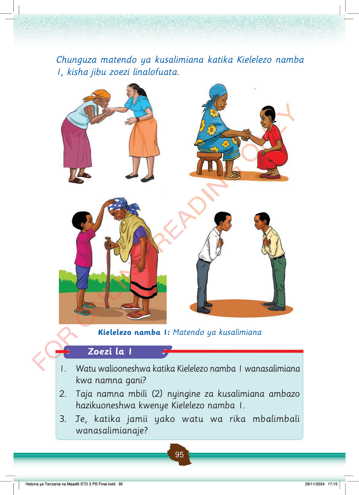

Chunguza matendo ya kusalimiana katika Kielelezo namba 1, kisha jibu zoezi linalofuata.
Mwanamke anamsalimia mkubwa kwa kuinama na kushika mkono kwa heshima.
Msichana anamsalimia bibi kwa kupiga goti kidogo na kupeana mkono.
Mtoto anamsalimia bibi kwa heshima huku akiweka mkono juu ya kichwa chake.
Wanaume wawili wanasalimiana kwa kuinama kidogo na kuweka mkono kifuani.
Kielelezo namba 1:
Matendo ya kusalimiana
Zoezi la 1
1. Watu waliooneshwa katika Kielelezo namba 1 wanasalimiana kwa namna gani?
2. Taja namna mbili (2) nyingine za kusalimiana ambazo hazikuoneshwa kwenye Kielelezo namba 1.
3. Je, katika jamii yako watu wa rika mbalimbali wanasalimianaje?